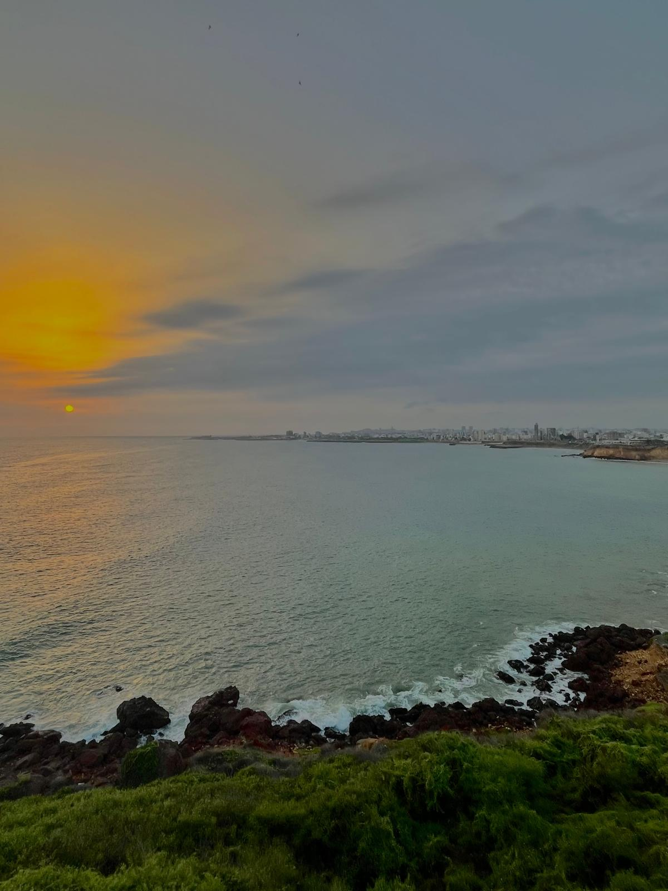

JPG Format Example

About This Image
This image shwos a beautiful sunset in Dakar Senegal. The blue and calm ocean matchs the blue sky covered with clounds and a hint a yellow from the tiny little sun fading away in a beaitiful sunset.
Why JPG Format?
JPG format works bests for this image because it handles all the smooth color changes in the sunset and ocean really well without losing much quality. It also keeps the file size smaller, so it is easier to store and share compared to other formats.
Image source: Original photo by Mame A Gueye